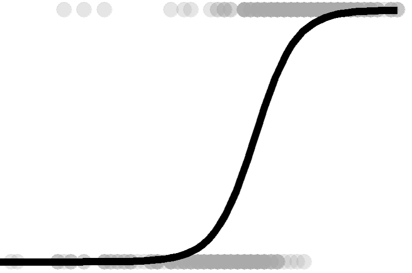
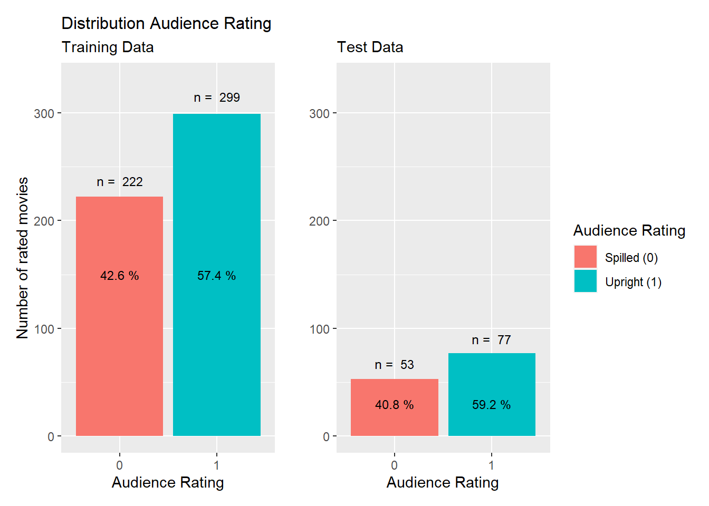
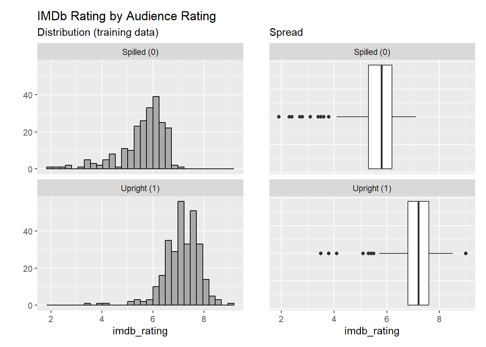
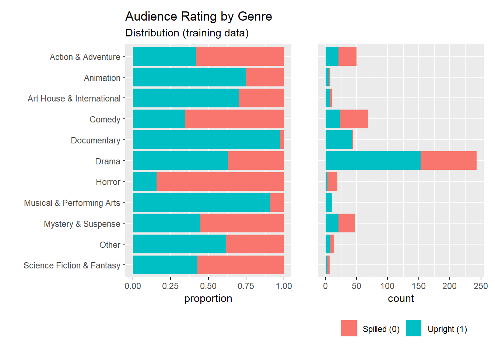
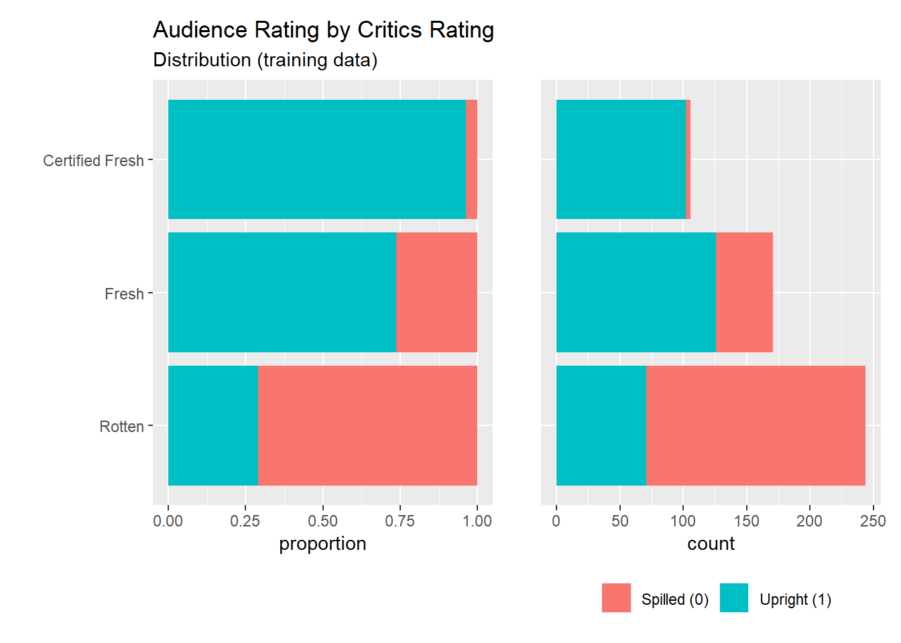
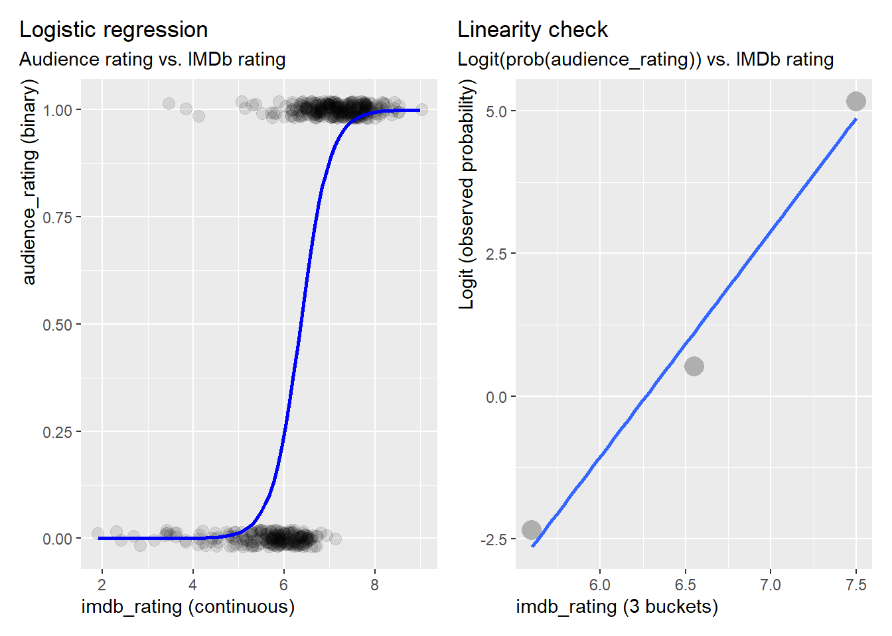
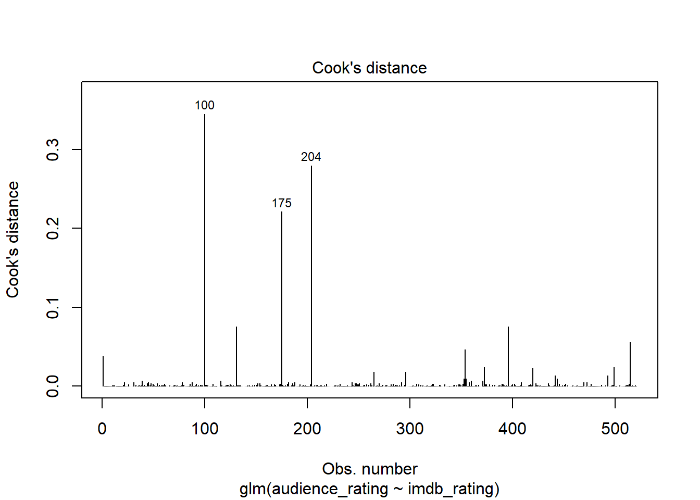
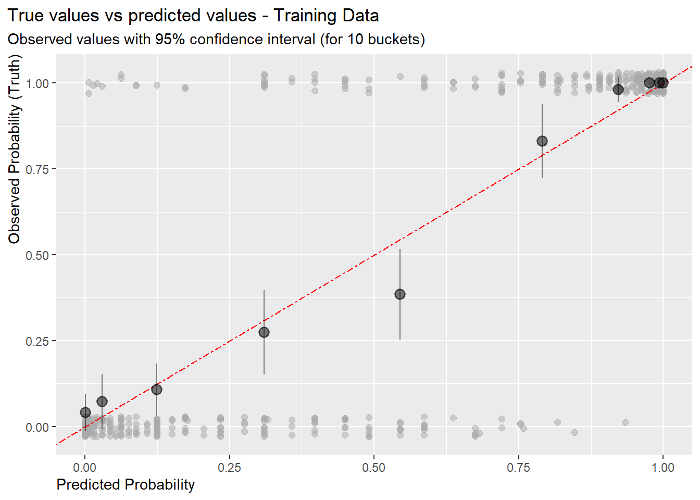
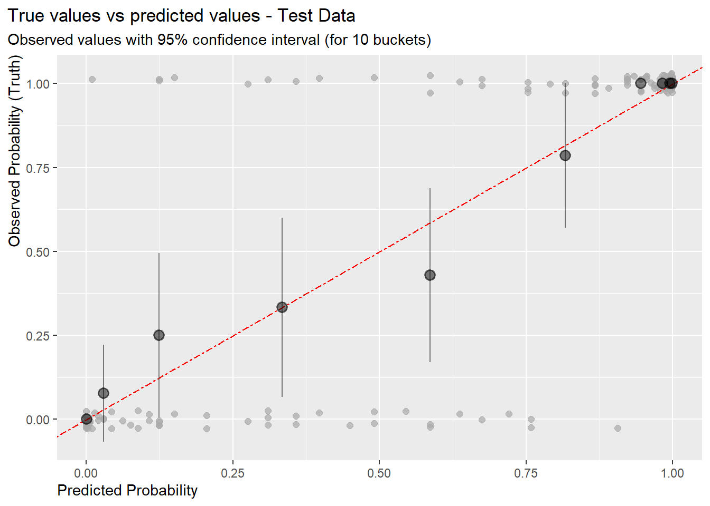
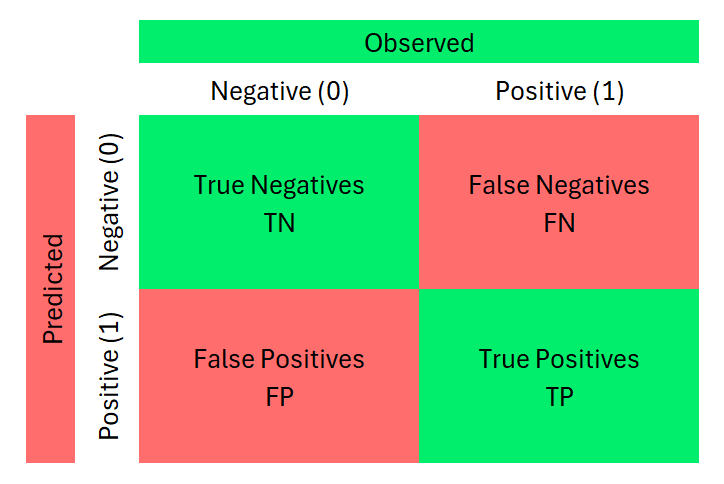

Project 3: Step-by-Step Guide
LOGISTIC REGRESSION

Introduction
Objectives
The objective of this project is to apply learned contents of
“Logistic Regression and Modeling”. Skills required for this project
are:
Logistic Regression,
Exploratory Data Analysis, Variable Selection,
Modeling, Interpretation,
Prediction, Classification,
Statistical Thinking, R programming
Contents
The logistic regression modeling project was split into the sections:
- Part 1: Data inspections
- Part 2: Research question
- Part 3: Explanatory data analysis
- Part 4: Modeling
- Part 5: Prediction
Code chunks and detailed descriptions can be found in the R-Markdown file.
Project Instruction
This project is a non-guided project and was not part of the course Data Analysis with R, Duke University hosted on the Coursera platform. The entire project was carried out by myself, from problem definition to answering the question. For this purpose, a multiple logistic regression model was implemented and tested in R.
In project Linear Regression we analyzed a
movie dataset and answered the question what factors make a movie
popular. The variable of interest was a continuous variable
imdb_rating and we used the multiple linear
regression method to answer this problem.
For this project we modified the research question in a way that we
must apply a logistic regression model. We, therefore,
selected as the variable of interest the binary variable
audience_rating.
As part of this project, we completed exploratory data analysis
(EDA), modeling, and prediction.
1. Data inspection
The dataset was provided by the course Data
Analysis with R, Duke University hosted on the Coursera
platform. The dataset includes information from Rotten Tomatos and IMDB.
The dataset used here is a sample of 651 observations with 8
variables. The data were collected in the years from 1970 to 2014 from
the audience on voluntary basis and from selected groups of movie
critics. So we can’t claim that they were collected by random sampling.
We, therefore, cannot infer the statistics to the general population,
i.e. movie popularity for all people in the US. We can only infer the
model on new data collected in the same time frame and under the same
method as our sample dataset.
2. Research question
Can the binary (audience) rating be explained by factors such as genre, other rating measures (e.g, IMDb and critics ratings), or nomination and awards (e.g. Academy Award-winning films)?
What are the most influential predictors for audience rating?
Task
Build a logistic regression model to best fit the relationships between these variables optimized for a high prediction accuracy for new data.
The logistic regression model has the following linear form:
\[ \begin{aligned} log(\frac{p}{1-p}) = \beta{_0}\ + \beta{_1} x{_1} + \beta{_2} x{_2} + \beta{_3} x{_3} + . . . + \beta{_k} x{_k} \end{aligned} \]
Where:
- A success is defined if outcome
audience_rating= “Upright” or “1”.
- \(p\) is the probability of a success
- \(odd = \frac{p}{1-p}\) is the
probability of success vs the probability of failure
- \(logit(p)\) is the logit function of \(p\) equal to \(log(\frac{p}{1-p})\)
- \(\beta_i\) are the unknowns of the
model
- \(x_i\) are the independent
variables.
3. Exploratory Data Analysis (EDA)
The variables
We identified seven potential independent variables of interest to be
included in the modeling .
| Variable type | Variable name | Data type |
|---|---|---|
| Dependent variable (response) | audience_rating | categorical |
| Independent variables (predictor) | imdb_rating | numerical |
| Independent variables (predictor) | critics_score | numerical |
| Independent variables (predictor) | critics_rating | categorical |
| Independent variables (predictor) | genre | categorical |
| Independent variables (predictor) | mpaa_rating | categorical |
| Independent variables (predictors) | best_pic_nom, best_pic_win | categorical |
Split data into training and test data
For modeling (training) and testing (prediction) we split by the
dataset into two sub-sets by stratified sampling:
- Training data (80%) for model training
- Test data (20%) to check the prediction accuracy of the final
model.
audience_rating distribution (training and test data)

The proportions of “Spilled (0)” versus “Upright (1)” in both
datasets are roughly evenly distributed, which is important to avoid any
bias between model fitting and final testing.
Relationships between dependent and selected independent variables
audience_rating vs
imdb_rating

Movies with lower IMDb ratings are more likely to be rated as “Spilled”
and higher IMDd ratings are more likely to be rated as “Upright”. This
variable is of interest.
audience_rating vs
genre

The proportions of audience rating are distinct for each type of genre.
The variable may be influential and is of interest.
audience_rating vs
critics_rating

The proportions of audience ratings are closely related to the critics
ratings. The variable is influential.
Check the assumption for logistic regression
Assumption for logistic regression
In order to apply logistic regression the variables must meet the
following 5 assumptions:
- Dependent variable is binary (1 or 0)
- The data are independent. I.e not paired, not depending on order of selection.
- The independent variables should not correlate too strongly with each other (collinearity assumption)
- The independent numerical variables are linearly correlated to the log odds of the dependent variable
- There should be no outliers
Assumption 1: Dependent variable is binary is
met. (binary response variable)
Assumption 2: Data are independent of each other is
met. (random sample)
Assumption 3: Independent variables are not too strongly
correlated is met after removal of a highly correlated
variable.
The correlation coefficients between the independent variables:

Variable critics_score is highly correlated to two other
variables and was removed.
Assumption 4: Independent numerical variable is linearly
correlated to the log-odds of the dependent variable is
met.

The relationship between imdb_rating and the observed
logit(p) is approximately linear.
Assumption 5: Outliers have been removed. The assumption
is met.
We identified and removed three outliers by Cook’s distance from a
simple logistic model with variable imdb_rating.

Part 4: Modeling
Model selection using a function from package MASS::stepAIC()
The model was calculated by a step-by-step forward selection approach. As measure for the model selection the function uses the AIC (Akaike Information Criterion) criteria. The lower the AIC value the better the model fit.
##
## Call:
## glm(formula = audience_rating ~ imdb_rating + critics_rating,
## family = "binomial", data = train_model)
##
## Coefficients:
## Estimate Std. Error z value Pr(>|z|)
## (Intercept) -22.9652 2.6380 -8.706 <2e-16 ***
## imdb_rating 3.8268 0.3934 9.727 <2e-16 ***
## critics_ratingFresh -1.7296 0.6747 -2.563 0.0104 *
## critics_ratingRotten -1.5618 0.6672 -2.341 0.0193 *
## ---
## Signif. codes: 0 '***' 0.001 '**' 0.01 '*' 0.05 '.' 0.1 ' ' 1
##
## (Dispersion parameter for binomial family taken to be 1)
##
## Null deviance: 707.49 on 517 degrees of freedom
## Residual deviance: 280.96 on 514 degrees of freedom
## AIC: 288.96
##
## Number of Fisher Scoring iterations: 7
The model selected by the algorithm has 1 numerical variable and 1
categorical variable, with to levels. In total 3 variables. All
variables are statistically significant.
Model diagnostics
To assess the quality of the model, we plotted the predicted outcome
against the true outcome by grouping the predicted probabilities into
buckets (e.g. 10%). For each bucket the mid-points and confidence
intervals were calculated.

The points plotted should fall close to the line y = x, since the
predicted probabilities should be similar to the observed probabilities.
The dashed line is within the confidence bound of 95% confidence
intervals for most of the buckets. We can therefore conclude that the
logistic fit of the final model is reasonable.
The final model
In the previous chapter we identified the best fitted model with 1
numerical predictor and 1 categorical predictors
(critics_rating with 2 levels), in total 3 predictors:
\[
\begin{aligned}
\widehat{logit(p)} = \hat{\beta_0} + \hat{\beta_1} \times
(imdb\_rating) + \hat{\beta_2} \times (critics\_ratingFresh) +
\hat{\beta_2} \times (critics\_ratingRotten)
\end{aligned}
\]
Where \(\beta_i\) are the estimates listed below:
| term | estimate | std.error | statistic | p.value |
|---|---|---|---|---|
| (Intercept) | -22.965178 | 2.6379652 | -8.705641 | 0.0000000 |
| imdb_rating | 3.826755 | 0.3934266 | 9.726732 | 0.0000000 |
| critics_ratingFresh | -1.729583 | 0.6747076 | -2.563456 | 0.0103636 |
| critics_ratingRotten | -1.561766 | 0.6672351 | -2.340653 | 0.0192501 |
The categorical variable critics_rating has the following
levels:
Certified Fresh: Reference levelFresh: estimate \(\hat{\beta_2} = -1.729583\)Rotten: estimate \(\hat{\beta_3} = -1.561766\)
Interpretation of the model coefficients
The model coefficients explain the change in the logit output per
unit of change in \(x_i\), all others
hold constant.
Since logit values are not intuitive understandable it is better to
explain the coefficient as “odds ratio (OR)”, i.e. effect of change in
odds. The odds ratios can be expressed by the exponent of the
coefficient, \(OR =
\exp(\hat{\beta_i})\).
| term | estimate | odds_ratio | significant |
|---|---|---|---|
| imdb_rating | 3.826755 | 45.913 | TRUE |
| critics_ratingFresh | -1.729583 | 0.177 | TRUE |
| critics_ratingRotten | -1.561766 | 0.210 | TRUE |
- For a one-unit increase of IMDb-rating, the odds of audience rating
“Upright” increases by a factor of 45.9.
critics_rating:Freshodds of being rated “Upright” by the audience are smaller by a factor of 0.18 thancritics_rating:Certified-Freshodds of being rated “Upright”.
critics_rating:Rottenodds of being rated “Upright” by the audience are smaller by a factor of 0.21 thancritics_rating:Certified-Freshodds of being rated “Upright”.
Answer the research questions
1. Can the binary (audience) rating be explained by attributes
such as genre, other rating measures (e.g, IMDb and critics ratings),
and nomination and awards (e.g. Academy Award-winning
films)?
The binary variable audience_rating can be well
explained by attributes imdb_rating and
critics_rating. The variables are statistically
significant.
2. What is the most influential predictor for audience
rating?
The overall most influential predictor for
audience_rating is imdb_rating, i.e. low
imdb_rating results in
audience_rating: Spilled and high imdb_rating
results in audience_rating: Upright.
Note
The model describes only existing relationships between independent
variables and Audience Rating. We cannot draw causation from these
findings. Furthermore, we cannot use the model to make predictions for
movie ratings that are outside of the time frame (1970 -2014). We also
cannot infer the model to the popularity of movies in the general
public, but only to data that are collected with the same variables and
measures.
Summary Modeling
The best model was selected by a step-by-step forward selection
approach using the AIC measure. The most influential variables are
imdb_rating and critics_rating. The
assumptions for the logistic regression modeling were met.
Overall, the logistic model is a reasonable estimate for
audience_rating based on the given dataset.
5. Prediction
Fitting accuracy of the model using the test data
To assess the quality of the model fit for the testing data we will
plot the bucketed predicted probabilities against the bucketed observed
probabilities with confidence intervals, as we did in section 4. Again,
we split the data into 10 buckets by quantiles of 10%.

The dashed line is within the confidence bound of 95% confidence
intervals for most of the buckets. The three data points in the right
upper corner with confidence interval 0 are not located directly on the
diagonal line but are very close to it. In other words, looking at the
graph we are 95% confident that more than 70% of the data points are
expressed correctly by the model. We can therefore conclude that the
logistic fit and the predicted values for the test data are
reasonable.
Classification accuracy of the model
Another way to assess the model performance is to look at their
classification measures. A logistic regression will return predicted
probabilities of the event occurrence. A threshold value, yet to be
determined, is used as a criterion to divide the predicted probabilities
into two classes {0, 1}. If the outcome values are balanced the
threshold value is usually set to 0.5. In this respect we can treat the
logistic model as a classification problem.
To evaluate a classification performance a decision matrix from the
outcome is commonly used. From the decision matrix the metrics
accuracy, error rate, precision,
sensitivity and specificity can be
calculated.
The decision matrix (a.k.a. confusion matrix):

Accuracy, most intuitive, but problematic for imbalanced
classes in response (e.g. 1 out of 1000)
- accuracy = (TP + TN) / (TP + FP + TN + FN)
Error Rate: Opposite of accuracy. Shows how often
the outcomes are being misclassified.
- error rate = (FP + FN) / (TP + FP + TN + FN)
Precision: Ratio of true positive to the predicted
positives. Used when the cost for false positive is high (i.e. avoid
false classification of “Upright”)
- precision = TP / (TP + FP)
Sensitivity: Concerned about positive outcomes, and when the
cost of false positive is low (i.e avoid false classification of
“Spilled”)
- sensitivity = TP / (TP + FN)
Specificity: Concerned about negative outcomes and a high
cost to a positive outcome. (i.e. in favor of outcome “Spilled”, because
outcome “Upright” is involved with high cost).
- specificity = TN / (TN + FP)
For our purpose we will focus on the accuracy and
precision metric, since the classes are evenly distributed.
Below the decision matrices for the training and test data.
Decision matrix of classification results
The classification metrics for test and training data are as follows:
| metrics | train_data | test_data | change |
|---|---|---|---|
| accuracy | 0.8822 | 0.8615 | 0.023 |
| error | 0.1178 | 0.1385 | — |
| precision | 0.9066 | 0.8831 | 0.026 |
| sensitivity | 0.8851 | 0.8831 | 0.002 |
| specificity | 0.8784 | 0.8302 | 0.055 |
The classification performance for the test data are in line with the
the performance for the training dataset. We don’t see any large decline
in performance in the test data due to overfitting or underfitting.
Accuracy: The prediction for audience_rating is
86.1% accurate for all cases using the test data. This is a 2.3%
reduction in accuracy than for the training data as expected.
Precision: The prediction of
audience_rating: Upright is 88.3% correct compared to the
total “Upright” predicted cases using the test data. This is a 2.6%
reduction in precision than for the training data as expected.
Summary prediction
- The classification performance for the test data are in line with the the performance for the training data
- The classification accuracy for the correct
audience_ratingis 86.1%. - The classification precision for the correct
audience_rating: Uprightis 88.3%. - The overall accuracy score of the model for the classification from
the test data is “good”.
Summary and Outlook
For the project we used a dataset about movie ratings from Rotten Tomatos and IMDb.
The task was to build a logistic regression model to identify the most influential of 7 variables that lead to the correct description of the binary variable audience rating (“Upright”, “Spilled”).
For the modeling the original sample dataset was split into training data (80%) and test data (20%). The assumptions required for logistic regression were checked, and correlated variables and outlieres were removed. The best fitting model was build by a step-by-step forward selection approach using the AIC criteria. Two influential variables were identified: “imdb_rating” and “ciricis_rating”. Especially, “imdb_rating” has the biggest impact on the outcome:
I.e.: For a one-unit increase of IMDb-rating, the odds of audience rating “Upright” increases by a factor of 45.9. Whereas, for one unit increase of critics rating the odds of audience rating increases only by a factor of 0.2.
Finally, the model was tested for prediction and classification with the separated test data. The classification performance for the test data were in line with the performance with the training data. The overall classification scores achieved were good, with an accuracy of 86.1% and a precision of 88.3%
For future projects in logistic regression analysis the modeling
could be further optimized by cross-validation approach for
best fitting and prediction. Furthermore, one could use methods from
machine learning to determine the threshold value for an
optimized classification.
References:
OpenIntro Statistics: Fourth Edition, by David Diez, Mine Cetinkaya-Rundel, Christoph Barr
Data Analysis with R Specialization, by Duke University on Coursera platform